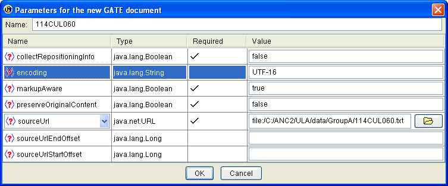
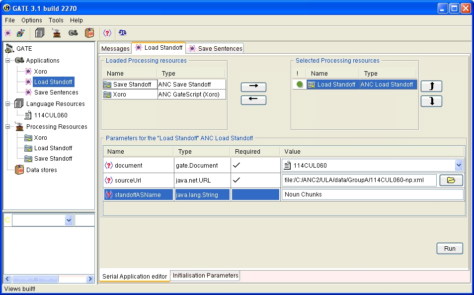
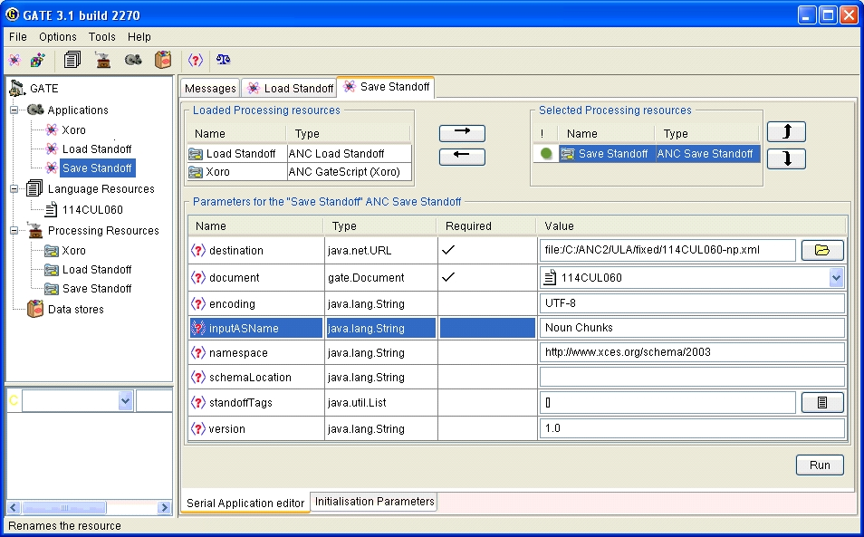

First download GATE. It is recommeneded that you use either the Windows or MAC OSX installers or the generic installer (an executable jar file). Run the installer and follow the on screen instructions. The remainder of this page uses the symbol $GATE_HOME to refer to the directory where you installed GATE.
GATE requires that you have Java installed. NOTE: Most Windows computers do not come with Java pre-installed. If you are not sure what version of Java is installed on your computer open a command prompt (shell) and type the command:
java -version
If you get a command not found error, or if the version of Java installed is 1.4 or older you will need to download the latest Java version from Sun Microsystems. Be sure to download the Java JDK and not the Java JRE.
Download the ANC GATE Tools. Create a directory called ANC in GATE's plugins directory and unzip the contents of the ANC.zip archive to that directroy. After you are done the $GATE_HOME/plugins/ANC directory should contain two files, ANC.jar and creole.xml.
Start GATE and select Manage creole plugins from the File menu. The Plugin Management Console will appear. Click on the Add new CREOLE repository button. Click the Select a directory button and select the $GATE_HOME/plugins/ANC directory. Click OK to select the directory. In the Plugin Management Console make sure that Load now and Load always boxes are checked and click on the OK button to close the Plugin Management Console.
More information on the Gate tools can be found here.
There are six annotation types provided with the second release of the ANC.
| Type | Description | |
|---|---|---|
| 1. | logical | The logical structure of the document down to the paragraph level. These annotations are required to convert the document into a well-formed XML file. |
| 2. | s | Sentence boundary annotations . |
| 3. | biber | Biber part of speech tags . |
| 4. | hepple | Hepple part of speech tags. |
| 5. | np | Noun chunks. |
| 6. | vp | Verb chunks. |
When opening an ANC document enter the annotation type in the standoffAnnotations field (logical, s, biber, etc.) and when adding additional annotations to an ANC document select the annotation file directly. More information about the naming convention used for the ANC standoff annotation files can be found here.
Select ANC Document under New Language Resource. The new document dialog will open. Fill in the following fields:
Click the OK button to close the dialog and open the document. Check the message tab for error messages. If all went well you should see the document listed in the left hand pane under Lanugage Resources (you may have to expand the Language Resources tree).
If, for some reason, the above method does not work you can load the text file for the document directly. Create a GATE Document (File -> New language resource -> Gate document) and select the text file (with the.txt extension) as the sourceUrl. The New Gate documet dialog is almost identical to the the new ANC document dialog, minus the fields for the standoff annotations, and you fill it in the same way. However, you must specify the encoding to be UTF-16. Once the text has been loaded follow the instructions below to load any standoff annotations.

click to view full size image
Before loading additional standoff annotations some initial set up will have to be done. However, this typically only has to be done once.
1. Create a Processing Resource (PR). Select New Processing Resource -> ANC Load Standoff. Enter a name for the PR (Load Standoff say) and click the OK button. The Load Standoff PR should appear in the left hand panel under Processing Resources.
2. Create a GATE Application. Select New Application -> Pipeline. Enter a name for the application (say, Load Standoff) and click the OK button. The Load Standoff application should appear in the left hand panel under Applications.
3. Configure and run the application.
i. Double click on the Load Standoff application in the left panel. This will open the Application Editor in the main window.
ii. Select the Load Standoff PR in the list of Loaded Processing Resources and click on the right arrow to move it to the list of Selected Processing resources.
iii. Click on the Load Standoff PR in the list of Selected Processing Resources to open the PR parameter editor in the bottom of the main window.
iv. Select the document you would like to add the standoff annotations to.
v. Click the folder icon next to the sourceUrl field and navigate to the standoff annotation file you would like to add. Unlike opening an ANC Document, where you select the .anc header file, when loading standoff annotations separately you must select the standoff annotation file directly. Noun chunk annotations have a -np.xml suffix.
vi. Set the standoffASName (optional). This is the name of the annotation set that the standoff annotations will be added to. In the image below I am added the sentence annotations (-s.xml suffix) to the Sentences annotation set. If an annotation set with that name alread exists the new annotations will be added to the existing set, otherwise a new annotation set with that name will be created.

click to view full size image
4. Repeat steps 3.iv to 3.vi as needed.
The procedure for saving standoff annotations is the same as the procedure for loading standoff annotations:

click to view full size image